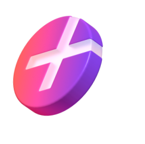
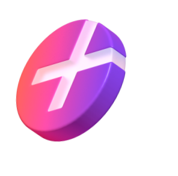

Вот что даёт участие
в клубе

0 ₽ за старт в каждой поездке

Катаетесь с друзьями? Бронируйте до трёх самокатов с аккаунта с абонементом — так у всех будет бесплатный старт

Бесплатная пауза 15 минут в поездке — например, чтобы зайти за кофе или передохнуть

Если самокат недостаточно заряжен или с ним неудобно переходить дорогу, замените по пути на другой — это бесплатно
Эксклюзивный доступ
к событиям Самокатов
С абонементом — у вас доступ к специальным мероприятиям,
скидки и классный мерч. В 2023 году мы танцевали на Даче Плюс
с Антохой MC, катались на самокатах с Сергеем Мезенцевым и слушали хор Attaque de Panique


Купить абонемент
и вступить
в клуб смогут те, кто в Плюсе
За каждую поездку на самокатах такие пользователи получают кешбэк баллами. Баллы можно тратить на поездки на самокатах
и такси с Яндекс Go, покупки
и заказы в других сервисах Яндекса
 

80 % наших
пользователей
уже в клубе
и экономят
на поездках
Присоединяйтесь — опция начнёт
действовать в начале сезона–2024.
Об открытии сезона предупредим
заранее, чтобы вы были готовы